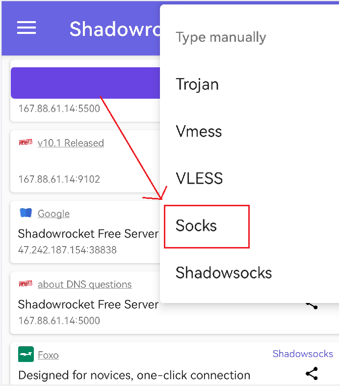
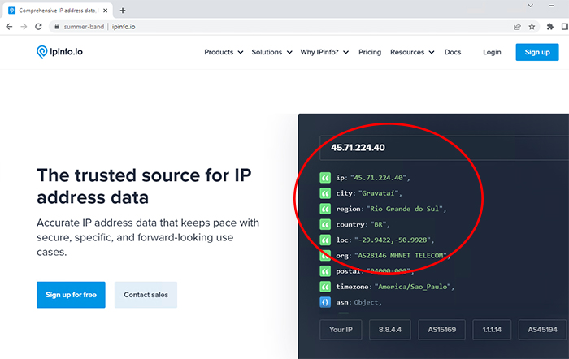
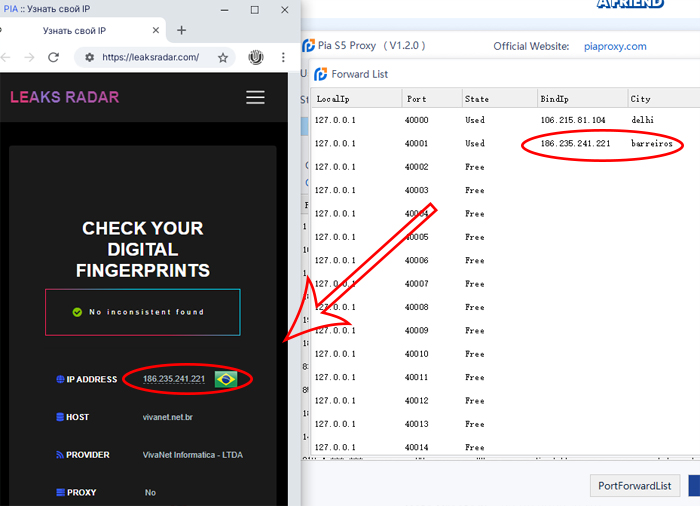
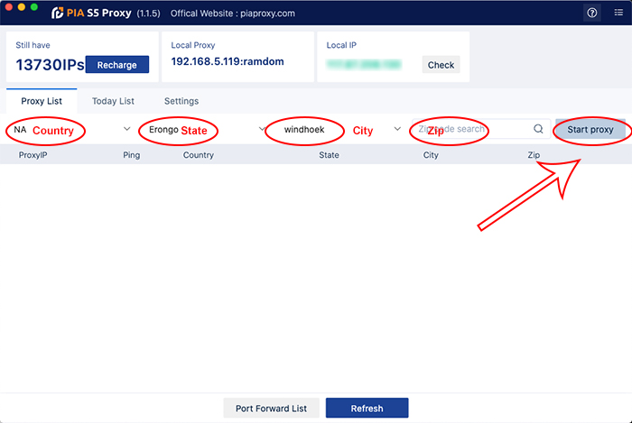

Proxy settings
Step1:
Set the number of ports you
need
Settings > Port Number >
Used
1. Set the required number of
ports in "Settings"
Step2:
Filter by
country/region/postcode
1. Select the Country you want
in "Country"
2. Select the region you want
in "City"
3. In "Zip" select
the Zip code you want
Step3:
Obtaining the Proxy IP
Address
Start > Select an proxy
> Right mouse button > Forward Port To Proxy > 40000/40001...
1. Click on "Start
Proxy"
2. Select an proxy from the
list and right click.
3. Select "Forward Port
To
Proxy" and select a Port such as 40000 from the drop-down list

4. After selecting the port,
the proxy starts running
After the above, you can see
the detailed proxy parameters in the "PortForwardList"
Example Set fixed port
forwarding
Example:
① Set 40000 port in a proxy IP.
② Enter the IP as the local proxy
address when using it. My local proxy address is 10.0.11.154, and the port is the 40000 port set
in the proxy IP.
Windows
Configuration proxy
Mac
Configuration proxy
Android Configuration
proxy
Proxifier Configuration
proxy
Postern Configuration
proxy
Shadowrocket Configuration
proxy
Google
Browser Configuration proxy
Firefox Browser
Configuration proxy
Example Set multi-port
forwarding Open
multiple fingerprint browsers to use
Example:
① Set 40000/40001/40002/40003... port in
multiple proxy IPs.
② When using, enter the IP is the local
proxy address, my local proxy address is 10.0.11.154, and the port is 40000 or 40001 or 40002 or
40003...
VMLogin Browser Configuration
proxy
AdsPower
Browser Configuration
proxy
MBBrowser Configuration
proxy
VMMask Configuration
proxy
Proxy Manager
Postern

Suitable for Android
Step 1
Configure
the proxy
Step 2
Download and install
Postern
Step 3
Add proxy settings
Add Proxy > Server Name
> Server Address > Server Port > Server Type > Save
1. Fill in the server name
(optional name)
2. Fill in the local proxy
address and server port
3. Click on the proxy type and
select SOCK5
4. Click Save to access the
target program normally
Proxy
Manager
Proxifier

for Windows and Mac
Step 1
Configure
the proxy
Step 2
Download and install
Proxifier
Step 3
Open proxy add
settings
Open Proxifier > Profile
> Proxy Server
1. Find the Profile in the
top directory
2. Find the Proxy Server in
the subdirectory of Profile and open it
Step 4
Add proxy settings
Proxy Server > Add >
Address > Port > Protocol=SOCKS Version 5 > OK
1. Open Proxy Server
settings
2. Select Add to add
proxy

3. Enter the local proxy
port
and ip address, and select the socks5 protocol
4. Click OK to save the
settings
After the
above steps are completed, you can run the program you need to proxy
Proxy
Manager
Shadowrocket

Available
for ios and Android
Step
1
Configure
the proxy
Step
2
Download
and install Shadowrocket

Step
3
Add
proxy settings
Shadowrocket
> + > Type > address > port >√
1.
Start
by opening Shadowrocket
2.
Click
+ to add proxy
3.
Click Type and select Socks5

4.
Fill
in the proxy address and port
5.
Click
Finish to return to the homepage of Little Rocket
6.
Click
Connection Test to test the proxy, and then you can access the target program normally
Proxy Manager
v2rayNG

Step
1
Configure
the proxy
Step
2
Download
and install v2rayNG
Step
3
Add
proxy settings
1. Install
and open the v2rayNG software in your phone
2. Click
➕
3. Select
Type manually[Socks]
4. Fill in
the proxy and port
5. Tap ✔.
save
6. Select
the newly added configuration
7. Click
the button in the lower left corner to start the service
Browser
Firefox

Step 1
Configure
the proxy
Step 2
Download and install Firefox
browser
Step 3
Add proxy settings
Open Firefox browser > Menu
> Settings > Network Module > Settings > Manual Settings > IP+Port > socks v5
DNS > OK
1. Open the browser, click
"Menu bar" - "Settings" in the upper right corner.
2. Find the "Network
Settings" module in the dialog box and click "Settings".
3. Select "Manual
Settings" and fill in the obtained proxy IP address and port in the dialog box.
4. Check "Proxy DNS when
using socks v5" and confirm.
5. After completing the above
steps, the proxy is successful.
Browser
Microsoft Edge

Step 1
Configure the proxy
Step 2
Download and install Microsoft Edge
Step 3
Open Microsoft Edge > Settings > System and performance > Open your computer's proxy settings > Click Open Proxy Server > Enter IP Address, Port > Save
1. Open Microsoft Edge, click the icon in the upper right corner, and open Settings
2. Select System and performance, click Open your computer's proxy settings
3. Click to open the proxy server, enter the IP address, port, and click Save

4. Open a new window to detect the IP address, which is the assigned proxy

Browser
Google Chrome

Step 1
Configure
the proxy
Step 2
Download and install Google
Chrome browser
Step 3
Add proxy settings
Settings > System > Open
your computer's proxy settings > Operating system settings
1. Click the drop-down box in
the upper right corner of the browser to open the settings.
2. Select System from the left
list in Settings.
3. Click to open your
computer's proxy settings.
Operating
System Proxy Settings
4. Open a new window to check the IP, you
can see that it is the assigned proxy

5. If you need to change the IP address of
another country, click the "Stop Proxy" button, select the target country, then click "Stop
Proxy", then follow the steps above to assign the proxy.
Emulator
LDPlayer

1.
Install and open the Postern software in the thunderbolt simulator
2.
Click Add Proxy Server
3.
Fill in the server name, address, port
4.
Click on Proxy Type and select SOCKS5
5.
Click Save
6.
Click on Rules
7.
Select Rule1
8.
Proxy/Proxy Group select the added proxy
9.
Click Save
Emulator
NoxPlayer

1. Install and open the
Postern
software in the simulator
2. Click Add Proxy
3. Fill in the server name,
address, port
4. Click on Proxy Type and
select SOCKS5

5. Click Save
6. Click on Rules
7. Select Rule1
8. Proxy/Proxy Group select
the
added proxy
9. Click Save
Global Proxy
IOS

Step 1:
Configure
the proxy
Step 2:
Download and install
Shadowrocket
Step 3:
Set up and use a proxy
server
Open Shadowrocket > Click ➕
> Socks5 > address and port > Click Finish > Click connect
1. Open Shadowrocket
on your iPhone
2. Click ➕
3. Click Type to select
Socks5
4. Fill in the lP address and
port
5. Click Finish to return to
the home page
6. Click connect to test the
proxy
7. Select the proxy you want
to
connect to and open the connection
The proxy succeeds after the
previous steps are complete
Global Proxy
Mac

Step 1:
Configure
the proxy
Step 2:
Find the network proxy
Settings
Apple button > System
Preferences > Network > Advanced
Click on the Apple logo (upper
left corner)
1. Click on "System
Preferences"
2. Click
"Network"
3. Click
"Advanced"
Step 3:
Set up and use a proxy
server
Proxy > SOCKS Proxy >
Local Proxy Address and Port > OK > Application
1. Select the Agents
TAB
2. Select "SOCKS
Proxy"
3. Fill in your local proxy
address and port
4. Click Apply

The proxy succeeds after the
previous steps are complete
Global Proxy
Windows

Step1:
Configure
the proxy
Step2:
Locate the network proxy
Settings
Search > Web Proxy > Web
Proxy Settings
1. Find the search box
2. Enter the network proxy in
the search box
3. Select the network proxy
settings to enter the system settings
Step 3:
Set up and use a proxy
server
Proxy > Use a proxy
server(Turn on) > Address > Port > Save
1. In the manual setting of
the
proxy, click Enable to use a proxy server.
2. Fill in the local proxy
address and port and save it.
3. Click "Save" to
finish
The proxy succeeds after the
previous steps are complete
Global Proxy
Android

Step 1:
Configure
the proxy
Step 2:
Find the network proxy
Settings
Settings >
WLAN > wireless network
1. Open your Android phone settings
2. Click "Connect", and then click
"WI-FI"
3. Press and hold the name of the wireless LAN you
are
connecting to
Step 3:
Set up and use a proxy
server
Manage Network Settings >
Display advanced options > Manual > address and port > Save
1. Select Manage Network
Settings
2. Click Show Advanced
Options
3. The proxy server is set to:
Manual
4. Fill in the local proxy
address and port
5. Click
"Save"
The proxy succeeds after the
previous steps are complete
Fingerprint
Browser
AdsPower

Step 1
Configure
the proxy
Step 2
Download and install
AdsPower
Step 3
Add proxy settings
Open AdsPower > Account
Management > Import > Fill in Account Information > Proxy type=Socks5 > Proxy
Host,Proxy Port=local IP,Port > Check Proxy > OK
1. Open AdsPower, first enter
the account management page, click Single Import.
2. Fill in the account
platform, name and other information.
3. Click "Proxy
Type"
and select SOCKS5.
4. Fill in the proxy host
address and proxy port.
5. Click "Detect
Proxy" to test whether the proxy information is entered correctly.
6. Click
"OK".
7. On the newly created
account
platform, click "Open" to launch the browser
8. The IP address you obtained
will be displayed on the startup browser.
Fingerprint
Browser
BitBrowser

Step 1
Configure
the proxy
Step 2
Download and install
BitBrowser
Step 3
Add proxy settings
Open BitBrowser > Browser
window > Create window > Fill in the information > Proxy type=SOCKS5 > Local
IP+Proxy port > OK
1. First, open BitBrowser and
log in.
2. Go to the Browser Window
sidebar tab in the background and click Create Window.
3. Select the account platform
from the list and fill in the required information for the other information.
4. Click Proxy Type and select
SOCKS5.
5. Fill in the proxy address
and proxy port.
6. Click OK.
7. After completing the above
steps, the proxy is successful.
Fingerprint
Browser
Hubstudio

Step 1
Configure
the proxy
Step 2
Download and install
Hubstudio
Step 3
Add proxy settings
Open Hubstudio > New
Environment > Proxy Type=Socks5 > Local IP + Proxy Port > OK
1. Open the Hubstudio
browser
2. Click to create a new
environment
3. Set the proxy type to
Socks5
4. Fill in the proxy host and
proxy port
5. Click Finish
6. After completing the above
steps, the proxy is successful
Fingerprint
Browser
MBBrowser

Step 1
Configure
the proxy
Step 2
Download and install
MBBrowser
Step 3
Add proxy settings
Open MBBrowser > New
Environment Configuration > Proxy Server=SOCKS5 > Local Address + Proxy Port > Create
Environment
1. First, open the MBBrowser
software.
2. Click "New Environment
Configuration".
3. Click Proxy and select
SOCKS5.
4. Fill in the proxy address
and proxy port.
5. Fill in the configuration
name.
6. Click "Create
Environment".
7. After completing the above
steps, the proxy is successful
Fingerprint
Browser
VMLogin

Step
1
Configure
the proxy
Step 2
Download and install
VMLogin
Step 3
1.Log in to the Vmlogin interface > click
"New Browser profile" > find "setting proxy server"
2.Open "Enable proxy server" > select
"socks5 proxy" > enter the "local proxy" displayed in pia, the port is the 40000 selected
before, Then click "Check Network" > finally click "save" and the proxy is successful!
Fingerprint
Browser
VMMask

Step 1
Configure
the proxy
Step 2
Download and install VMMask
Step 3
Add proxy settings
Open VMMask > Create >
Add Proxy IP > Socks5 proxy > IP address+Port > Save
1. Click the Quick Create
button in the VMMask client.
2. Click Proxy and select the
type SOCKS5.
3. Fill in the proxy address
and proxy port.
4. Click Save.
5. After completing the above
steps, the proxy is successful
API
Guide
Please
note that the API only works for getting new proxy from "ProxyList", and can not be
used to reuse the proxy from "TodayList". The following are how to use the API and
examples.
1.After
login to the software, swich to API tab, click "Start
Proxy"
button, you need to keep the software staying start proxy when you use the API
2.Copy
api URL, put the link to the software/script you want to use, then you can automatically assign
proxies.
you
can use the parameter like this:
-
Use a random proxy from any countries
http://10.0.254.168:10101/api/get_ip_list?num=1&country=all
-
Use a random proxy from US
http://10.0.254.168:10101/api/get_ip_list?num=1&country=US
-
Use a random proxy from US, state: NewYork
http://10.0.254.168:10101/api/get_ip_list?num=1&country=US&state=NewYork
-
Use a random proxy from US, state: NewYork, city: New York
http://10.0.254.168:10101/api/get_ip_list?num=1&country=US&state=NewYork&city=newyork
-
Use a random proxy zip code is 000
http://10.0.254.168:10101/api/get_ip_list?num=1&zip=000
For
country you need to enter the country ISO alpha-2 code, if you have no idea, you can
visit：https://www.piaproxy.com/country
Program proxy settings
1.Open the Pia client and click Program
2.Add application: click "+" or drag the program to Program
3.Right-click the program and click Go ProxyList
4.Select an IP right click and click Program connect
5.Right-click the program and click Run
6.The program will run automatically and you will be automatically connected to the proxy
Fingerprint
Browser
MASKFOG
Step 1
Configure
the proxy
Step 2
Download and install MASKFOG
Step 3
Add proxy settings
1.enter Pia S5, click "Start Proxy" on the
right
2.Right-click on any selected proxy and
select any port in "Forward Port To Proxy". The selection here is "40000"
3.If you want to view the specific proxy
parameters, click "PortForwardList" to see the detailed "IP+Port".
4.Log in to MASKFOG and click "New
Browser"

5.in the new browser environment
① Select "Device Configuration"
② Select "Custom Device" as the proxy
method
③ Fill in the "device name"
arbitrarily
④ Select "Socks5" device type
⑤ Fill in the "IP+Port" obtained from Pia
S5 and enter
⑥ Finally, click to check the device, and
it will display "link test successful", which means the proxy is successful, and the work can be
run!
Fingerprint
Browser
Mulogin
Step 1
Configure
the proxy
Step 2
Download and install Mulogin # Three-day free trial supported
Step 3
Add proxy settings
1.Log in to the mulogin interface, click
"Add Browser" --> find "Basic Settings" --> select "socks5" and enter the "local proxy"
displayed in pia, the port is the 40000 selected before.
Then click "Check Network", if
green is
displayed, the proxy is successful!
2.Then we open the newly created browser
and query the IP of the browser in ipinfo, which is also the IP address after the proxy!
3.If you want to implement a global proxy,
log in to the mulogin interface, click "Preferences" on the right --> select the "socks5" proxy
type and enter the IP address and port obtained in pia.
Finally, detect the proxy, and it
can
work normally if it shows green!
Fingerprint
Browser
LALICAT
Step 1
Configure
the proxy
Step 2
Download and install LALICAT
Step 3
Add proxy settings
Open LALICAT > Profile List > Add Browser
Profile > Enter Basic Configuration > Proxy Settings Select SOCKS5 > IP Address, Port > Check
the network > Save
1.Open LALICAT, enter the Profile List page, and click Add Browser
Profile
2.Enter the basic configuration, select
the platform, name, etc.
3.Click Proxy Settings and select
SOCKS5
4.Enter the obtained IP address and
port
5.Click Check the network
6.Click Save
7.Click the newly created Profile and
click Open
8.The IP address you obtained will be
displayed on the launched browser
Browser
Brave Browser

Step 1
Configure
the proxy
Step 2
Download and install LALICAT
Step 3
Add proxy settings
Open Brave > Settings > System > Open your
computer's proxy settings > Click Open Proxy Server > Enter IP Address, Port > Save
1. Open
Brave, click the icon in the upper right corner, and open the settings
2. Select System, Open your computer's
proxy settings
3. Click to open the proxy server, enter
the IP address, port, and click Save
4.Open a new window to detect the IP
address, which is the assigned proxy
Browser
Waterfox

Step 1
Configure the proxy
Step 2
Download and install Waterfox
Step 3
Open Waterfox > Settings > Network Settings > Check Manual proxy configuration > SOCKS Host input IP address, port > OK
1. Open the Waterfox browser and click Settings
2. Enter the General page, slide the bottom of the page and click Settings
3. Check Manual proxy configuration
4. SOCKS Host input proxy IP address, port
5. Click OK
6.Open a new window to detect the IP address, which is the assigned proxy

Browser
Vivaldi

Step 1
Configure the proxy
Step 2
Download and install Vivaldi
Step 3
Open Vivaldi > Settings > Network > Proxy Settings > Click to enable proxy server > enter IP address, port > Save
1. Open Vivaldi and click the settings icon in the lower left corner
2. Select Network, click Proxy Settings
3. Click to open the proxy server, enter the IP address, port, and click Save

4. Open a new window to detect the IP address, which is the assigned proxy

Fingerprint Browser
Dolphin Anty

Step 1
Configure
the proxy
Step 2
Download and install Dolphin Anty
Step 3
Add proxy settings
Open Dolphin > CREATE PROFILE > New Profile enter basic settings > NEW PROXY select SOCKS5 > Enter IP address port > CREATE
1. Open Dophin, click CREATE PROFILE, enter the New Profile page
2. On the New Profile page, enter basic settings
3. NEW PROXY chooses SOCKS5
4.Enter IP address, port, Check connection
5.Click CREATE
6.Click START
7.The IP address you obtained will be displayed on the launched browser
Fingerprint Browser
Gologin

Step 1
Configure the proxy
Step 2
Download and install Gologin
Step 3
Open Gologin > New Profile > Connection Type select Socks 5 Proxy > enter proxy host and port > check proxy > Create Profile
1. Open the Gologin browser and click New Profile
2. Select Socks 5 Proxy for Connection Type
3. Enter the proxy host and port
4. Check the proxy, success
5. Click Create Profile
6. Click Run to run the browser
7. The IP address you obtained will be displayed on the launched browser

Fingerprint Browser
Ghost

Step 1
Configure the proxy
Step 2
Download and install Gologin
Step 3
Open Ghost > Ghost Proxy Control > Add/Edit Proxies > enter proxy host and port > Add Proxy > enable proxy
1.Open the Ghost browser and click the icon in the upper right corner
2.Click Add/Edit Proxies to go to the Ghost Proxy Control tab
3.In the Add/Edit Proxies tab, create your proxy name
4.Fill in your PIA proxy credentials (IP and port), click Add proxy
5.Click the proxy you created and click the Enable button
6.Open the Ghost Proxy Control tab and select the proxy you added, click Reload
7.You will see the IP you got
Fingerprint Browser
Incogniton

Step 1
Configure the proxy
Step 2
Download and install Gologin
Step 3
Open Incogniton > New Profile > proxy configuration select Socks5 > enter proxy host and port > Create Profile
1. Open the Incogniton browser and click New Profile
2.Go to the proxy tab and select Socks5 for the connection type
3.Enter your PIA proxy credentials (IP and port) and click Check Proxy
4.Click Create Profile on the right side of the screen
5.Enable your proxy profile, click Start, a new browser window will open and connect to the proxy immediately
Fingerprint Browser
Sphere

Step 1
Configure the proxy
Step 2
Download and install Gologin
Step 3
Open Sphere > new identity > select Socks5 > enter proxy host and port > Save
1.Open the Sphere browser and click on the new identity
2.Select Socks5 protocol
3.Fill in your PIA proxy credentials (IP and port) and click Save
4.A new tab will appear and you will be automatically connected to the proxy
Fingerprint Browser
Undetectable

Step 1
Configure the proxy
Step 2
Download and install Gologin
Step 3
1.Open the Undetectable browser and click New
2.In the window that opens, enter a name and click Save
3.Select New Proxy
4.Click the socks protocol
5.Enter the proxy credentials (IP and port), Check and save the proxy
6.Click Save
7.Click to open
8.A new tab will appear and you will be automatically connected to the proxy

Fingerprint Browser
ClonBrowser

Step 1
Configure the proxy
Step 2
Download and install Gologin
Step 3
1.Open ClonBrowser, click PF > New Browser Profile
2.In the window that opens, enter a name, select a region and click Set Up
3.Select Socks for proxy mode
4.Enter the proxy credentials (IP and port), pass the connection test and click Save
5.Click Create Profile
6.Click Start
7.A new tab will appear and you will be automatically connected to the proxy
Browser
Start Tor Browser

Step 1
Configure the proxy
Step 2
Download and install Gologin
Step 3
1.Open Start Tor Browser
2.Click the application menu icon
3.Click Settings
4.Click connection
5.Click Settings
6.Select SOCKS 5 for proxy type

7.Paste the copied IP address and port, and click OK
8.Open a new window to check the IP, it is the assigned proxy

MacOS Install Tutorial
1.Click here to download Pia S5 for MacOS
2.Go to your downloads folder
3.Right-click the PIA S5 Proxy.dmg file and click Open
4.Go to the PIA S5 Proxy application folder
5.Right-click the PIA S5 Proxy application and click Open

6.A pop-up window prompts "Are you sure you want to open it?" Click Open
Important: When you can't install because of "can't open because apple can't check it for malware", or can't open after installation, you can solve it like this!
6.1 Click "OK" in the pop-up window
6.2 Open System Preferences
6.3 On the Preferences interface, click "Security and Privacy"
6.4 Go to the Security and Privacy window and click the "General" tab
6.5 In the general settings panel, click the "Open anyway" button next to "Blocked because from an unidentified developer" to complete
7. The PIA S5 Proxy program will start
8. Select country, state, city or ZIP search, click Start proxy to get started!



.png)
.png)